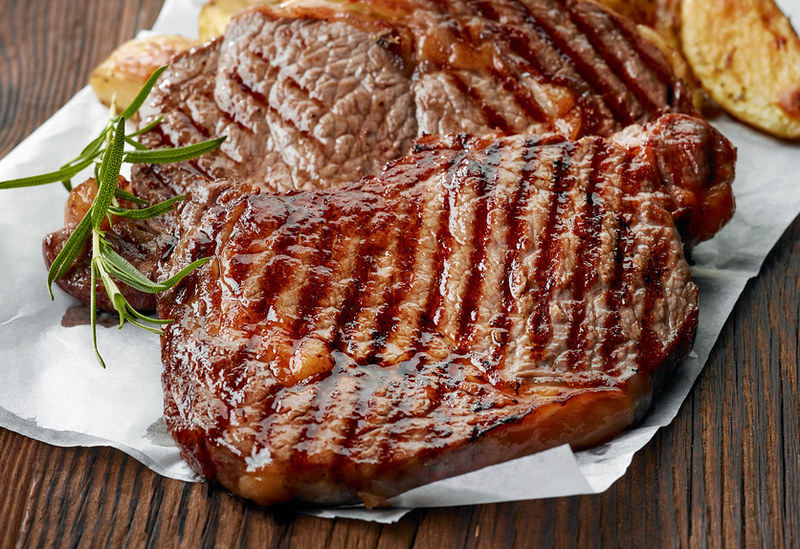

The Perfect Flat Iron Steak
Home

The ingredients
- 1 (2 pound) flat iron steak
- 2 ½ tablespoons olive oil
- 2 cloves garlic, minced
- 1 teaspoon chopped fresh parsley
- ¼ teaspoon chopped fresh rosemary
- ½ teaspoon chopped fresh chives
- ¼ cup Cabernet Sauvignon (or other dry red wine)
- ½ teaspoon salt
- ¾ teaspoon ground black pepper
- ¼ teaspoon dry mustard powder
Steps